<!-- Hero -->
<div class="intro">
  <h1 class="header1">About the <em>Places & Spaces</em> Exhibition</h1>

  <div class="image-container">
    
    <ng-template #desktop>
      
    </ng-template>
  </div>

  <div class="description">
    <div class="paragraph">
      <div markdown [data]="overviewParagraph"></div>
    </div>
    <div class="quote">
      <div markdown [data]="overviewQuote"></div>
    </div>
  </div>
</div>

<!-- Reports -->
<div class="reports">
  <div class="row">
    <div class="annual-reports">
      <mat-form-field>
        <mat-select placeholder="Annual Reports" (selectionChange)="getReport($event.value)">
          <mat-option *ngFor="let report of annualReports" [value]="report.pdfLink">
            {{report.year}}
          </mat-option>
        </mat-select>  
      </mat-form-field>
    </div>  
  </div>  
</div>

<hr class="divider">
<div class="spacer-24">
</div>

<!-- Ambassador Map -->
<div class="ambassador-map">
  <div class="container">
    
  </div>
</div>

<div class="spacer-72">
</div>

<!-- Galary -->
<sci-tab-header class="tab-header" [tabs]="pageTabs" (activeTabIndexChanged)="updateActivePageTab($event)">
</sci-tab-header>

<ng-template [ngIf]="activePageTab == 0">
  <sci-profile-gallery
    class="profile-gallery"
    [title]="'Curatorial Team'"
    [description]="curatorsDescription"
    [profiles]="curatorProfiles"
    [compact]="false">
  </sci-profile-gallery>
  
  <div class="spacer-72">
  </div>

  <sci-profile-gallery
    [title]="'Advisory Board'"
    [description]="advisoryBoardDescription"
    [profiles]="advisoryBoardProfiles"
    [compact]="true">
  </sci-profile-gallery>  
</ng-template>

<ng-template [ngIf]="activePageTab == 1">
    <sci-profile-gallery
    [title]="'Exhibit Ambassadors'"
    [description]="ambassadorsDescription"
    [profiles]="ambassadorProfiles"
    [groupBy]="'region'"
    [compact]="true">
  </sci-profile-gallery>  
</ng-template>

<div class="spacer-72">
</div>

<!-- News -->

<h2 class="header2">In the News</h2>
<div class="row">
  <div class="group1">
      <sci-select [select]="year" [options]="yearList" (selectChange)="onSelectChange($event)">
      </sci-select>
      <sci-table [dataSource]="dataSource" [tableHeaders]="sortHeaders" [headersOnly]="true" filters>
      </sci-table>
  </div>
  <sci-search-overlay [search]="searchKey" (searchChange)="onSearchChange($event)">
  </sci-search-overlay>
</div>

<sci-list-view class="news-list"
    [config]="{type: 'news', items: (dataSource.connect().asObservable() | async) || [], displayLimit: 6, showAllItems: false}">
</sci-list-view>

<div class="spacer-72">
</div>

<!-- Partners -->
<sci-partners></sci-partners>
 
